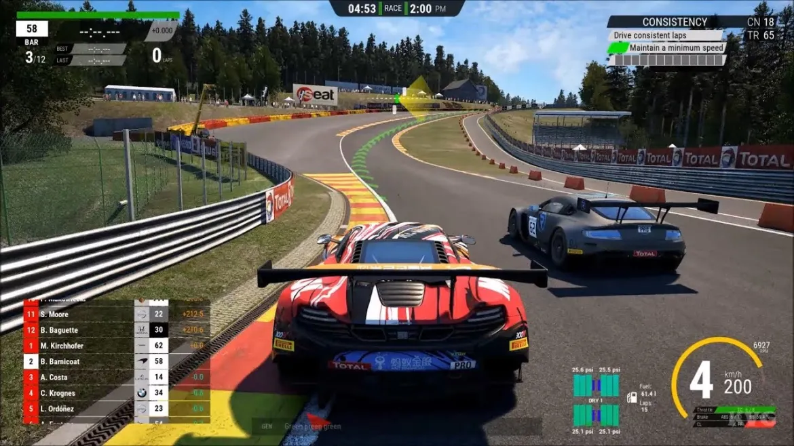
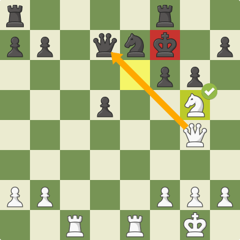

Géneros de videojuegos
| Género | Descripción | Ejemplos | Imagenes |
|---|---|---|---|
| Acción | Videojuegos que requieren reflejos rápidos y coordinación. | The Legend of Zelda | 
|
| Aventura | Exploración de mundos y resolución de acertijos. | Dark Sous III |  |
| Deportes | Son juegos basados en basicamente Desportes | Fifa,NBA,NFL. |  |
| Simulacion | En este género se pueden encontrar videojuegos muy variados, pues se basan en simular algún elemento de la vida real como la conducción de un coche, un avión, un tren, el trabajo de un cirujano o incluso la vida de un animal. | Asseto Corsa,Farming Simulator, Truk Simulator |  |
| Juegos de Mesa | Se trata de los clásicos juegos de mesa de toda la vida | Parchis, Chest |  |